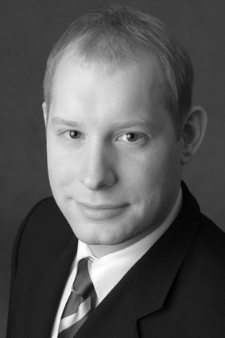

	<div class="right-sidebar">

				<!-- Main -->
			<div id="main-wrapper">
				<div class="container">
					<div class="row 200%">
						<div class="8u">
							<div id="content">

								<!-- Content -->
									<article>

										<h2>Vita</h2>

										<p>Ich möchte mich Euch auf dieser Seite kurz vorstellen, so dass ihr Euch schon vor dem ersten Kontakt ein Bild machen könnt, ob ich Euch in Eurer jeweiligen Situation unterstützen kann. Eine Kurzzusammenfassung vorab: Ich bin <b>Diplom-Informatiker</b> (Dipl.-Inf., Note: 1.0 und mit Auszeichnung, TU Dortmund), wurde <b>promoviert</b> zu einem Thema der Schwarmintelligenz (Dr. rer. nat., Note: Magna cum lauda, Universität Oldenburg), beschäftige mich seit Kindestagen an mit Themen der IT und Informatik, besitze langjährige Berufserfahrung in und außerhalb des akademischen Bereichs, habe in der akademischen Lehre über 20 Arbeiten wissenschaftlicher Natur (Bachelor-/Master-Thesis, Diplomarbeiten, Proseminars- und Seminarsarbeiten) betreut und begutachtet, sowie in der akademischen Lehre, auf Konferenzen und als Berater vielfach Voträge zu Informatik und IT-Themen gehalten und ferner als Berater praktische Kenntnisse im Projektmanagement erworben.<br><br>Diese Kenntnisse setzen ich und mein Team ein, Euch im gesamten Informatik-relevanten Spektrum Eures Studiums zu unterstützen.<p/>

										<h3>Der Anfang</h3>	
										<p>Mit dem C64 fing bei mir alles an. Ich war etwa neun Jahre alt, als ich die ersten Ausflüge in die C64-Basic Welt machte. Mein Onkel zeigte mir einge Schleifenkonstrukte, die ich anschließend zu (sehr) kleinen Programmen ausbaute. Mit zehn Jahren, in der vierten Klasse, antwortete ich bereits auf die in diesem Lebensabschnitt häufige Frage, was man denn später gerne mal werden würde: Informatiker. Es folgte ein Amiga 500 (mit Amiga Basic) und schlißelich der Einstieg in die x86-Welt ein erster Kontakt mit C++ und etwas später Assembler. GNU/Linux (ab Kernelversion 2.0 etwa) war ebenso selbstverständlich. In dieser Zeit wuchs das Interesse an Algorithmen, ein Informatik-Studium nach dem Abitur war zu diesem Zeitpunkt schon lange die naheliegende Konsequenz.</p>
										
										<h3>Akademische Ausbildung</h3>
										<p>Zum Wintersemester 2002/03 begann ich mein Studium der Kerninformatik an der TU Dortmund, welches ich Ende 2008 als Diplom-Informatiker mit der Note 1.0 und Auszeichnung abschloß (Spezialisierung: Computational Intelligence). Meine Diplomarbeit über ein Thema der Verkehrssimulation wurde mit 1.0 bewertet. Daneben verfasste ich weitere Proseminar und Seminarsarbeiten in der Informatik als auch zu Themen meines geisteswissenschafltiches Nebenfachs, der Organisationspsychologie, welches mir weiteren Einblick in die Erstellung wissenschaftlicher Arbeiten aus studentischer Sicht gewährte. Von 2009 bis 2013 war ich anschließend wissenschaftlicher Mitarbeiter an der Fakulät Informatik und in der Erforschung verteilter Systeme und Algorithmen unter Realzeitbedinungen angesiedelt (Prof. Dr. H.F. Wedde). In dieser Zeit war ich in den folgenden für SENGE Coaching besonders wichtigen Bereichen tätig:
										<ul style="list-style-type: disc; padding-left: 5%;">
											<li>Forschung im Bereich verteilter Schwarmintelligenzansätze zur Online-Optimierung im Straßenverkehr und Erstellung meiner Dissertation "Ein Bienen-inspiriertes Schwarmintelligenz-Verfahren zum Routing im Straßenverkehr".</li>
											<li>Erstellung von Konferenzbeiträgen, sowie deren Präsentation im In- und Ausland als auch die Verfassung von Journalartikeln. Ferner die Begutachtung von Papern in Peer-Review-Verfahren.</li>
											<li>Betreuung und Begutachtung von über 20 studentischen Abschlussarbeiten mit Haupt- oder Nebenfach Informatik (Bachelor-/Master-Thesis, Diplomarbeiten), sowie Proseminar- und Seminarausarbeitungen</li>
											<li>Unterstützung bei der Erstellung von Forschungsförderanträgen bei DFG und EU. Zeitweise wissenschaftlicher Mitarbeiter des Lehrstuhls in der <a href="http://www.for1511.tu-dortmund.de/cms/de/Ueber_uns/index.html">DFG Forschergruppe 1511</a>.</li>
										</ul>	
										Während meiner rund 11 Jahre im akademischen Kosmos habe ich Erfahrungen besonders im Bereich verteilter Algorithmen und Systeme, Multiagentensystemen, Lern- (wie Artificial Neural Networks und Support Vector Machines) und Optimierungsverfahren (Evolutionary Algorithms und Swarm Intelligence) und deskriptive und induktive statistische Verfahren (wie Cluster-Verfahren, SOMs und Tests für Algorithmenvergleiche).
										Neben diesem theoretischen Hintergrund besitze ich mehrjährige Erfahrung in objektorientierten (Java, C++) und funktionalen Programmiersprachen (Scala, Haskell), Software Engineering-Konzepten aus dem SCRUM-Bereich und gänigen Tools (IDEs, Mathematica, GNU R, DevOps-Tools aus dem Unix-Umfeld uvm.).
										</p>

										<h3>Beruflicher Werdegang</h3>
										Ich war bisher in den folgenden Informatik und IT-nahen beruflichen Tätigkeiten engagiert:
										<p>
											<ul style="list-style-type: disc; padding-left: 5%;">	
											<li>2002-2008: HiWi an der Fakultät E-Technik der TU Dortmund, Mitarbeit im EU-Forschungsprojekt <a href="http://www.ist-intermon.org">IST Intermon</a> (Programmierung in Java3d) und weiteren Lehrstuhl-internen Projekten, Ausarbeitung und Erstellung von Skripten für die Lehre, Programmierung in Java und C++.</li> 
											<li>2009-2012: Studentischer Berater bei Studentische Unternehmensberatung VIA e.V., Projektleitung in IT-Projekten.</li>
											<li>2009-2013: Wissenschaftlicher Mitarbeiter in Forschung und Lehre an der Fakultät Informatik der TU Dortmund im Bereich Intelligent Transportation Systems und verteilter Algorithmen.</li>
											<li>Seit 2013: Im Bereich Technology Consulting bei <a href="http://www.accenture.com">Accenture GmbH</a> für Projekte im In- und Ausland in Strategie- und Outsourcing-Projekten.</li>
											</ul>
										</p>	
										<p>
											Durch die Tätigkeiten im akademischen Umfeld (2002-2013) habe ich aus studentischer als auch aus betreuender Sicht gelernt, wie wissenschaftliche Arbeiten und mündliche Prüfungen zu ertellen, vorzubereiten und zu bewerten sind. Die Tätigkeit als Berater im wirtschaftlichen Umfeld haben meine Kenntnisse im Projektmanagement, der Erstellung von Präsentationen und die Vorbereitung von Vorträgen vertieft. 
										</p>
										<h3>SENGE <i class="fa fa-graduation-cap"> </i>Coaching</h3>

										<p>Während und nach meiner Zeit als wissenschaftlicher Mitarbeiter kamen Freunde, Bekannte und später auf deren Empfehlung auch weitere Informatik-Studenten (und interessanterweise auch Fachfremde) auf mich zu, zwecks Diskussion schwieriger Sachverhalte und Tipps rund um ihre wissenschaftliche Arbeiten. Dies war der ausschlaggebende Anstoß meine vorstehend beschriebenen Kompetenzen als SENGE <i class="fa fa-graduation-cap"> </i>Coaching öffentlich anzubieten.

										Es wurde schnell klar, dass viele Studenten wenig Erfahrung bei der Erstellung und Strukturierung längerer Texte, insbesondere wissenschaftliche Arbeiten mit Informatikanteil, mitbrachten und dass die Betreuung seitens der Lehrstühle und Institute in diesem Bereich, oft schlicht aufgrund mangelnder Zeit, nicht immer vorbildlich ist (exzellente Ausnahmen bestätigen die Regel). Meiner Ansicht nach, sind es meistens gar nicht ausschließlich die inhaltlichen Fragestellungen der Informatik, die den Studenten Kopfzerbrechen bereiten. Allerdings fehlt Vielen Erfahrung in der Vorgehensweise und ein kundiger Peer, der potentielle Entscheidungen hinterfragen kann ("Peer Challenging / Sparing Partner"). Die Idee lag nahe diesen Service spezifisch für wissenschaftliche Arbeiten mit Informatikanteil anzubieten. Ziel ist, dass ich den Student unterstütze seine Kompetenz in diesen Bereichen auszubauen: Hilfe zur Selbsthilfe, von einem Informatiker für Informatiker. <!--Meine erworbenen Kenntnisse aus dem akademischen und wirtschaftlichen Bereich, setze ich dazu ein, dieses Ziel zu erreichen. -->   

										<!--Das Korrekturlesen einer fertigen Arbeit von einer fachkundigen Auch zur Vorbereitung von mündlichen Prüfungen hilft die möglichst realistische Simulation der Prüfungssituation, um die Erfolgsquote deutlich zu erhöhen. -->
										</p>
										<p> 	
										Ich betreibe Informatik mit sehr viel Freude und ich hoffe diese Freude weitergeben zu können. Daher gilt:  <a href="noghostwriting.html">Wissenschaftsbetrug, wie Ghostwriting, Plagiate u.ä., lehne ich strikt ab.</a></p>


									</article>

							</div>
						</div>
				<div class="4u">
							<div id="sidebar">
						
								<!-- Sidebar -->
									<section>
										<h3>Das Konzept</h3>
									
										<p>Hilfe zur Selbsthilfe, von einem Informatiker für Informatiker. Ein Sparing Partner fürs Studium. Mein Team und ich <i>challengen</i> Eure Kenntnisse, Ideen und Konzepte, so dass ihr bestens vorbereitet seid. </p>
									</section>
									<section>
										<h3>Zur Person</h3>
										</img>
										<br>
										<p>Dr. rer. nat. Sebastian Senge, Dipl.-Inf.</p>
									</section>
									<section>
										<h3>Das Team</h3>
										In der Informatik geht's häufig <i>interdisziplinär</i> zu. Dazu pflege ich einen Pool an Experten aus promovierten Mathematikern, Elektrotechnikern, Maschinenbauern u.ä., die mit Rat und Tat zu Stelle sind, wenn es nötig wird. Gemeinsam bringen wir Euch weiter.   
									</section>
							

							</div>
						</div>
					</div>
				</div>
			</div>

		
		
	</div>
